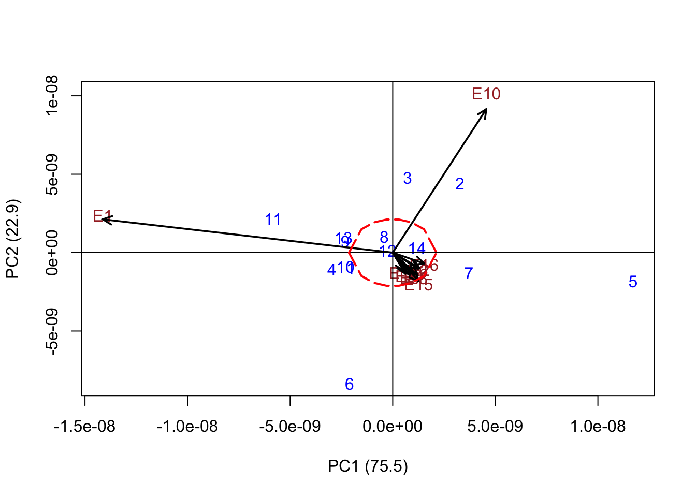

Analise Conjunta Virginia
Chris Simoes
3/24/2021
Last updated: 2021-04-03
Checks: 6 1
Knit directory: AnaliseR/
This reproducible R Markdown analysis was created with workflowr (version 1.6.2). The Checks tab describes the reproducibility checks that were applied when the results were created. The Past versions tab lists the development history.
The R Markdown file has unstaged changes. To know which version of the R Markdown file created these results, you’ll want to first commit it to the Git repo. If you’re still working on the analysis, you can ignore this warning. When you’re finished, you can run wflow_publish to commit the R Markdown file and build the HTML.
Great job! The global environment was empty. Objects defined in the global environment can affect the analysis in your R Markdown file in unknown ways. For reproduciblity it’s best to always run the code in an empty environment.
The command set.seed(20210324) was run prior to running the code in the R Markdown file. Setting a seed ensures that any results that rely on randomness, e.g. subsampling or permutations, are reproducible.
Great job! Recording the operating system, R version, and package versions is critical for reproducibility.
Nice! There were no cached chunks for this analysis, so you can be confident that you successfully produced the results during this run.
Great job! Using relative paths to the files within your workflowr project makes it easier to run your code on other machines.
Great! You are using Git for version control. Tracking code development and connecting the code version to the results is critical for reproducibility.
The results in this page were generated with repository version e7f0281. See the Past versions tab to see a history of the changes made to the R Markdown and HTML files.
Note that you need to be careful to ensure that all relevant files for the analysis have been committed to Git prior to generating the results (you can use wflow_publish or wflow_git_commit). workflowr only checks the R Markdown file, but you know if there are other scripts or data files that it depends on. Below is the status of the Git repository when the results were generated:
Ignored files:
Ignored: .DS_Store
Ignored: .Rhistory
Ignored: .Rproj.user/
Untracked files:
Untracked: code/SpatialCorrection.R
Untracked: data/gregorio.jpeg
Untracked: data/~$Weight_EconValue.xlsx
Unstaged changes:
Modified: analysis/analiseConjuntaVA.Rmd
Modified: data/A427_converted.csv
Note that any generated files, e.g. HTML, png, CSS, etc., are not included in this status report because it is ok for generated content to have uncommitted changes.
These are the previous versions of the repository in which changes were made to the R Markdown (analysis/analiseConjuntaVA.Rmd) and HTML (docs/analiseConjuntaVA.html) files. If you’ve configured a remote Git repository (see ?wflow_git_remote), click on the hyperlinks in the table below to view the files as they were in that past version.
| File | Version | Author | Date | Message |
|---|---|---|---|---|
| Rmd | 467e09a | chris263 | 2021-03-28 | Improving satbility with bilinear and agricolae |
| html | 467e09a | chris263 | 2021-03-28 | Improving satbility with bilinear and agricolae |
| html | 10df00d | chris263 | 2021-03-25 | Build site. |
| Rmd | df218f9 | chris263 | 2021-03-25 | Joint Analysis |
Objectives
- Find the best candidate to become a commercial variety
- Develop a selection index
Script setup
Install packages, start the README.md, set the random seed
va <- read.csv("data/A427_converted.csv", sep = ",", header = T)
name_cols <- c("germplasmName", "Replication", "Location", "kgHa", "DollarKg", "DollarHa",
"IQS", "Talo", "TotalSuggar", "TotalAlcaloids")
colnames(va) <- name_cols
Traits <- colnames(va)[4:length(va)]
nTraits <- ncol(va) - 3
Treatments <- unique(va$germplasmName)
Locations <- unique(va$Location)
#This is the economic value for each trait
econValue <- c(1.2, 1.2, 1.5, 1.6, -1.2, -1.1, -1.2)
#Select Method of spatial correction (RowCol or SPDE)
method = "RowCol"
#Centering the data - Function scale sets mean = 0
#It is important to scale the data in order to get a sum of different traits afterwards
va_centered <- va
for (i in 1:nTraits) {
va_centered[, 3 + i] <- scale(va[, i + 3], scale = TRUE)
}
for (i in 1:length(Locations)) {
if (i == 1) {
inputSPDE <- prepare_data(va_centered, Traits, Treatments, Locations[i],
method)
} else {
inputSPDE <- rbind(inputSPDE, prepare_data(va_centered, Traits, Treatments,
Locations[i], method))
}
}
for (i in 1:length(Locations)) {
if (i == 1) {
correctedValues <- spatial_correction(inputSPDE, Treatments, Traits, Locations[i],
method)
} else {
correctedValues <- rbind(correctedValues, spatial_correction(inputSPDE, Treatments,
Traits, Locations[i], method))
}
}
name_cols <- append(name_cols, c("colNumber", "rowNumber", "plot"), after = 2)
colnames(correctedValues) <- name_cols
# head(correctedValues)Mixed Model
Here I am calculating heritability per location and also joint heritability.
loc_result <- matrix(data = 0, nrow = length(Locations), ncol = nTraits)
colnames(loc_result) <- Traits
rownames(loc_result) <- Locations
library("lme4")
library("emmeans")
for (i in 1:length(Locations)) {
location <- Locations[i]
Dat_Loc = correctedValues %>% filter(Location == UQ(location))
for (j in 7:length(Dat_Loc)) {
Pheno <- colnames(Dat_Loc)[j]
#I'm modeling replication (block) as fixed effect, because in individual values per rep.
model <- lmer(get(Pheno) ~ (1 | germplasmName) + (1 | Replication), na.action = na.exclude,
data = Dat_Loc)
variance = as.data.frame(VarCorr(model))
gvar <- variance[1, "vcov"]
repvar <- variance[2, "vcov"]
resvar <- variance[3, "vcov"]
addCor <- variance[1, "sdcor"]
phenovar <- gvar + resvar + repvar
H2 = gvar/phenovar
loc_result[i, j - 6] <- H2
}
}
Warning in checkConv(attr(opt, "derivs"), opt$par, ctrl = control$checkConv, :
Model failed to converge with max|grad| = 0.00238998 (tol = 0.002, component 1)
Warning in checkConv(attr(opt, "derivs"), opt$par, ctrl = control$checkConv, :
Model failed to converge with max|grad| = 0.0049388 (tol = 0.002, component 1)
pre_result <- matrix(data = NA, nrow = nTraits, ncol = 3)
colnames(pre_result) <- c("h2", "varG", "varP")
rownames(pre_result) <- Traits
for (i in 7:length(correctedValues)) {
Pheno <- colnames(correctedValues)[i]
#I'm modeling replication (block) as fixed effect, because in individual values per rep.
model <- lmer(get(Pheno) ~ (1 | germplasmName) + Replication + (1 | Location) +
(1 | germplasmName:Location), na.action = na.exclude, data = correctedValues)
variance = as.data.frame(VarCorr(model))
gvar <- variance[2, "vcov"]
envar <- variance[3, "vcov"]
resvar <- variance[4, "vcov"]
addCor <- variance[2, "sdcor"]
phenovar <- gvar + resvar + envar
H2 = gvar/phenovar
pre_result[i - 6, 1] <- H2
pre_result[i - 6, 2] <- gvar
pre_result[i - 6, 3] <- phenovar
}
loc_results_table <- knitr::kable(loc_result)
loc_results_table
preresults_table <- knitr::kable(pre_result)
preresults_table
| kgHa | DollarKg | DollarHa | IQS | Talo | TotalSuggar | TotalAlcaloids | |
|---|---|---|---|---|---|---|---|
| E1 | 0.6836786 | 0.0532353 | 0.5273343 | 0.0000000 | 0.2916147 | 0.3972811 | 0.4218284 |
| E2 | 0.0361043 | 0.7470176 | 0.3416590 | 0.5974811 | 0.4832684 | 0.6655444 | 0.1777376 |
| E3 | 0.4560928 | 0.7025455 | 0.6877631 | 0.6460358 | 0.6926218 | 0.7492092 | 0.7297055 |
| E4 | 0.3970144 | 0.7853235 | 0.6206184 | 0.6670720 | 0.6652854 | 0.3824759 | 0.7440042 |
| E5 | 0.5482170 | 0.1561898 | 0.6115610 | 0.0000000 | 0.5680271 | 0.4162279 | 0.5045054 |
| E6 | 0.4434661 | 0.4134641 | 0.7447125 | 0.8893481 | 0.9734106 | 0.8450615 | 0.1940895 |
| E8 | 0.3054957 | 0.5352976 | 0.9551629 | 0.5856786 | 0.4925758 | 0.4527936 | 0.5505708 |
| E10 | 0.5259033 | 0.7843467 | 0.5327980 | 0.6305658 | 0.5085440 | 0.0788196 | 0.3170121 |
| E11 | 0.6645965 | 0.7587923 | 0.7175600 | 0.4772141 | 0.7870418 | 0.6559819 | 0.5466967 |
| E15 | 0.7928432 | 0.5044167 | 0.3886518 | 0.5158655 | 0.6360431 | 0.5843577 | 0.6968631 |
| E16 | 0.4441724 | 0.9618344 | 0.9785173 | 0.4061167 | 0.8749109 | 0.4462800 | 0.5208154 |
| h2 | varG | varP | |
|---|---|---|---|
| kgHa | 0.1197403 | 0.0046710 | 0.0390093 |
| DollarKg | 0.2897986 | 0.0234268 | 0.0808384 |
| DollarHa | 0.1876341 | 0.0065536 | 0.0349276 |
| IQS | 0.1678001 | 0.0043139 | 0.0257085 |
| Talo | 0.3659990 | 0.0329683 | 0.0900775 |
| TotalSuggar | 0.2868087 | 0.0179753 | 0.0626737 |
| TotalAlcaloids | 0.1981891 | 0.0056407 | 0.0284612 |
Pre processing
Preparing for Pheno and Geno matrix Calculating regression coefficients
# 1 Phenotypic matrix
# The of diagonal is defined by the covariation between the traits.
# cov(1,2) = rP x sqrt(varPheno[1] x varPheno[2])
PhenoMatrix <- matrix(data = 0, ncol = nTraits, nrow = nTraits)
for (i in 1:nTraits) {
t1 <- as.numeric(correctedValues[, i + 6])
if (i < nTraits) {
for (j in (i + 1):nTraits) {
t2 <- as.numeric(correctedValues[, j + 6])
offDiagonal <- var(t1, t2, na.rm = TRUE)
PhenoMatrix[i, j] <- offDiagonal
PhenoMatrix[j, i] <- offDiagonal
}
}
PhenoMatrix[i, i] <- pre_result[i, 3]
}
# 2 Genotypic matrix
GenoMatrix <- diag(c(pre_result[, 2]))
# 3 Economic value
# Already defined as econValue
# Calculate the Index. It is a matrix with 1 column and nTraits rows
SelectionIndex <- solve(PhenoMatrix) %*% GenoMatrix %*% econValue
rownames(SelectionIndex) <- Traits
colnames(SelectionIndex) <- "Index"
# print(SelectionIndex)Making Selection with Index
Here I’m using the index to multiply by each trait. After that it will be possible make a rank.
library(dplyr)
library(tidyr)
#
#Calculate the index per germplasmName
preresults <- correctedValues %>% group_by(germplasmName) %>% summarise(kgHa = mean(kgHa,
na.rm = TRUE), DollarKg = mean(DollarKg, na.rm = TRUE), DollarHa = mean(DollarHa,
na.rm = TRUE), IQS = mean(IQS, na.rm = TRUE), Talo = mean(Talo, na.rm = TRUE),
TotalSuggar = mean(TotalSuggar, na.rm = TRUE), TotalAlcaloids = mean(TotalAlcaloids,
na.rm = TRUE))
#Removing extra column with germplasmName
preresults <- data.matrix(subset(preresults, select = -c(germplasmName)))
#Naming rows and cols
colnames(preresults) <- Traits
rownames(preresults) <- Treatments
#Index Matrix has 1 column and the number of rows is the number of germplasmName
index_matrix <- preresults %*% SelectionIndex
# Creating a matrix with real average (not centered)
preresults2 <- va %>% group_by(germplasmName) %>% summarise(kgHa = mean(kgHa, na.rm = TRUE),
DollarKg = mean(DollarKg, na.rm = TRUE), DollarHa = mean(DollarHa, na.rm = TRUE),
IQS = mean(IQS, na.rm = TRUE), Talo = mean(Talo, na.rm = TRUE), TotalSuggar = mean(TotalSuggar,
na.rm = TRUE), TotalAlcaloids = mean(TotalAlcaloids, na.rm = TRUE))
#
preresults2 <- data.matrix(subset(preresults2, select = -c(germplasmName)))
#
# print(index_matrix)
# Result matrix has all traits + selection index
results <- as.data.frame(cbind(preresults2, index_matrix))
results <- results[order(results$Index, decreasing = TRUE), ]
#
#Print the result with Rmarkdown
results_table <- knitr::kable(results)
results_table| kgHa | DollarKg | DollarHa | IQS | Talo | TotalSuggar | TotalAlcaloids | Index | |
|---|---|---|---|---|---|---|---|---|
| 5 | 4061.879 | 3.314545 | 13469.310 | 73.61515 | 30.11636 | 14.92727 | 3.359091 | 0.1985876 |
| 6 | 4154.939 | 3.260606 | 13545.349 | 71.46667 | 30.43152 | 14.67879 | 3.311818 | 0.1252675 |
| 10 | 3904.485 | 2.908485 | 11373.517 | 64.38788 | 30.89545 | 12.35455 | 3.033030 | 0.1127824 |
| 4 | 4075.606 | 3.180303 | 12990.008 | 68.75152 | 29.09000 | 14.09697 | 3.780909 | 0.0741463 |
| 12 | 3606.606 | 2.613939 | 9496.347 | 55.07879 | 31.29970 | 10.26970 | 3.378788 | 0.0560272 |
| 2 | 4006.970 | 3.064545 | 12239.588 | 67.01515 | 28.86515 | 12.87576 | 3.286667 | 0.0356971 |
| 8 | 4108.455 | 3.144242 | 12911.744 | 68.28182 | 33.16606 | 12.51515 | 3.941212 | 0.0184019 |
| 9 | 3901.636 | 3.177576 | 12369.762 | 72.16212 | 31.08594 | 12.88750 | 3.295625 | 0.0136946 |
| 1 | 4109.091 | 2.938485 | 12055.652 | 63.18788 | 31.42061 | 12.67576 | 3.215152 | -0.0685977 |
| 11 | 4060.333 | 3.073939 | 12507.655 | 66.46667 | 32.50303 | 12.43939 | 3.790000 | -0.0710272 |
| 13 | 4020.273 | 3.157879 | 12701.920 | 69.01212 | 32.31121 | 13.01212 | 3.919394 | -0.0797111 |
| 14 | 3970.758 | 3.038182 | 12038.190 | 66.76667 | 30.71909 | 13.02121 | 3.755758 | -0.0845712 |
| 3 | 4254.242 | 3.156667 | 13419.774 | 68.10909 | 32.28091 | 13.25758 | 3.980909 | -0.1589402 |
| 7 | 4154.182 | 3.143333 | 13064.612 | 69.04242 | 32.43212 | 12.41818 | 3.991515 | -0.1615740 |
Stability analysis with AMMI
This is using Bilinear sowftware
library("Bilinear")
# Prepare a matrix with mean of treatments per location
preStability <- data.matrix(correctedValues %>% group_by(Location, germplasmName) %>%
summarise(kgHa = mean(kgHa, na.rm = TRUE), DollarKg = mean(DollarKg, na.rm = TRUE),
DollarHa = mean(DollarHa, na.rm = TRUE), IQS = mean(IQS, na.rm = TRUE), Talo = mean(Talo,
na.rm = TRUE), TotalSuggar = mean(TotalSuggar, na.rm = TRUE), TotalAlcaloids = mean(TotalAlcaloids,
na.rm = TRUE)))
Stability <- preStability[, 3:9] %*% SelectionIndex
Stability <- cbind(preStability[, 2], preStability[, 1], Stability)
colnames(Stability) <- c("germplasmName", "Location", "Index")
rownames(Stability) <- preStability[, 2]
#
Stability <- tapply(Stability[, 3], list(Stability[, 1], Stability[, 2]), mean)
AMMI_Index <- bilinear(x = Stability, verbose = F)
AMMIplot(AMMI_Index)
#Stability using a specific trait
Trt <- tapply(correctedValues$kgHa, list(correctedValues$germplasmName, correctedValues$Location),
mean)
AMMI_Trt <- bilinear(x = Trt, verbose = F)
AMMIplot(AMMI_Trt)
# abline(v=-0.05, col='red')
# abline(v=+0.05, col='red')
# AMMIplot(AMMIfit, PC=2)
library("agricolae")
# ## Exemple: mmodel<- with(va,AMMI(Location, germplasmName, Replication, DollarHa, console=FALSE))
name_cols <- colnames(correctedValues)
Stability_AMMI <- data.matrix(correctedValues[, 7:length(correctedValues)]) %*% SelectionIndex
correctedValues <- cbind(correctedValues, Stability_AMMI)
colnames(correctedValues) <- c(name_cols, "Index")
model <- with(correctedValues, AMMI(Location, germplasmName, Replication, Index,
console = TRUE))
# model$ANOVA
# see help(plot.AMMI)
# biplot
plot(model)
AMMI.contour(model, distance = 0.18, shape = 8, col = "red", lwd = 2, lty = 5)
# triplot PC 1,2,3
# plot(model, type=2, number=TRUE)
# biplot PC1 vs Yield
# plot(model, first=0,second=1, number=TRUE)
# Example 2
Analysis of Variance Table
Response: y
Df SS MS testStat Pvalue
E 10 0.146060840 0.0146060840 5.802731e-02 9.999846e-01
G 13 1.681937540 0.1293798107 5.140024e-01 9.127460e-01
PC1 22 20.447107834 0.9294139925 0.000000e+00 < 1e-04 ***
PC2 20 4.936305517 0.2468152758 2.210000e+02 2.210000e-02 *
PC3 18 3.264151268 0.1813417371 1.770000e+02 1.770000e-02 *
PC4 16 1.753919504 0.1096199690 1.369000e+03 1.369000e-01
PC5 14 1.302904413 0.0930646009 1.610000e+02 1.610000e-02 *
PC6 12 0.481437803 0.0401198169 4.254000e+03 4.254000e-01
PC7 10 0.342220867 0.0342220867 1.214000e+03 1.214000e-01
PC8 8 0.138666270 0.0173332838 2.056000e+03 2.056000e-01
PC9 6 0.054415295 0.0090692158 5.700000e+01 5.700000e-03 **
PC10 4 0.001236623 0.0003091557 NA
---
Signif. codes: 0 '***' 0.001 '**' 0.01 '*' 0.05
Number of significant multiplicative terms : 3
Analysis of Variance Table
Response: y
Df SS MS testStat Pvalue
E 10 3.869345e-03 3.869345e-04 7.844160e-03 1.000000e+00
G 13 1.263746e+00 9.721122e-02 1.970722e+00 2.806227e-02 *
PC1 22 2.886196e+00 1.311907e-01 2.000000e+00 2.000000e-04 ***
PC2 20 2.564777e+00 1.282389e-01 0.000000e+00 < 1e-04 ***
PC3 18 5.608813e-01 3.116007e-02 0.000000e+00 < 1e-04 ***
PC4 16 4.007477e-01 2.504673e-02 0.000000e+00 < 1e-04 ***
PC5 14 5.418448e-07 3.870320e-08 9.500000e+01 9.500000e-03 **
PC6 12 2.395078e-07 1.995899e-08 5.060000e+02 5.060000e-02
PC7 10 8.216766e-08 8.216766e-09 6.365000e+03 6.365000e-01
PC8 8 5.212509e-08 6.515636e-09 4.560000e+03 4.560000e-01
PC9 6 2.426404e-08 4.044006e-09 3.892000e+03 3.892000e-01
PC10 4 5.714421e-09 1.428605e-09 NA
---
Signif. codes: 0 '***' 0.001 '**' 0.01 '*' 0.05
Number of significant multiplicative terms : 5
ANALYSIS AMMI: Index
Class level information
ENV: E1 E2 E3 E4 E5 E6 E8 E10 E11 E15 E16
GEN: 1 2 3 4 5 6 7 8 9 10 11 12 13 14
REP: 1 2 3
Number of observations: 462
model Y: Index ~ ENV + REP%in%ENV + GEN + ENV:GEN
Random effect REP%in%ENV
Analysis of Variance Table
Response: Y
Df Sum Sq Mean Sq F value Pr(>F)
ENV 10 0.438 0.04382 0.0854 0.99984
REP(ENV) 22 11.287 0.51303 2.6860 9.911e-05 ***
GEN 13 5.046 0.38814 2.0321 0.01837 *
ENV:GEN 130 98.167 0.75513 3.9535 < 2.2e-16 ***
Residuals 286 54.627 0.19100
---
Signif. codes: 0 '***' 0.001 '**' 0.01 '*' 0.05 '.' 0.1 ' ' 1
Coeff var Mean Index
60084.63 0.0007273714
Analysis
percent acum Df Sum.Sq Mean.Sq F.value Pr.F
PC1 62.5 62.5 22 61.341324 2.788242 14.60 0.0000
PC2 15.1 77.6 20 14.808917 0.740446 3.88 0.0000
PC3 10.0 87.5 18 9.792454 0.544025 2.85 0.0001
PC4 5.4 92.9 16 5.261759 0.328860 1.72 0.0425
PC5 4.0 96.9 14 3.908713 0.279194 1.46 0.1254
PC6 1.5 98.4 12 1.444313 0.120359 0.63 0.8162
PC7 1.0 99.4 10 1.026663 0.102666 0.54 0.8611
PC8 0.4 99.8 8 0.415999 0.052000 0.27 0.9752
PC9 0.2 100.0 6 0.163246 0.027208 0.14 0.9908
PC10 0.0 100.0 4 0.003710 0.000927 0.00 1.0000
Limit, radio: 0.292986
Genotype in: 2
Genotype out: 12
$`GENOTYPE IN`
[1] "14" "8"
$`GENOTYPE OUT`
[1] "1" "10" "11" "12" "13" "2" "3" "4" "5" "6" "7" "9"
$Distance
distance
1 0.7394450
10 0.5409948
11 0.4046439
12 1.6277001
13 0.5202001
14 0.2905373
2 0.3671661
3 0.5678273
4 0.8020300
5 0.6141566
6 0.5994138
7 0.7264628
8 0.2768396
9 0.5428117

| Version | Author | Date |
|---|---|---|
| 467e09a | chris263 | 2021-03-28 |

Note that the echo = FALSE parameter was added to the code chunk to prevent printing of the R code that generated the plot.
sessionInfo()
R version 4.0.3 (2020-10-10)
Platform: x86_64-apple-darwin17.0 (64-bit)
Running under: macOS Big Sur 10.16
Matrix products: default
BLAS: /Library/Frameworks/R.framework/Versions/4.0/Resources/lib/libRblas.dylib
LAPACK: /Library/Frameworks/R.framework/Versions/4.0/Resources/lib/libRlapack.dylib
locale:
[1] en_US.UTF-8/en_US.UTF-8/en_US.UTF-8/C/en_US.UTF-8/en_US.UTF-8
attached base packages:
[1] parallel stats graphics grDevices utils datasets methods
[8] base
other attached packages:
[1] agricolae_1.3-3 Bilinear_0.2.2 emmeans_1.5.5-1 lme4_1.1-26
[5] INLA_20.03.17 foreach_1.5.1 sp_1.4-5 Matrix_1.3-2
[9] forcats_0.5.0 stringr_1.4.0 dplyr_1.0.2 purrr_0.3.4
[13] readr_1.4.0 tidyr_1.1.2 tibble_3.0.4 ggplot2_3.3.3
[17] tidyverse_1.3.0
loaded via a namespace (and not attached):
[1] nlme_3.1-151 fs_1.5.0 lubridate_1.7.9.2 httr_1.4.2
[5] rprojroot_2.0.2 tools_4.0.3 backports_1.2.1 R6_2.5.0
[9] AlgDesign_1.2.0 questionr_0.7.4 DBI_1.1.0 colorspace_2.0-0
[13] withr_2.3.0 tidyselect_1.1.0 klaR_0.6-15 compiler_4.0.3
[17] git2r_0.28.0 cli_2.2.0 rvest_0.3.6 formatR_1.7
[21] xml2_1.3.2 scales_1.1.1 mvtnorm_1.1-1 digest_0.6.27
[25] minqa_1.2.4 rmarkdown_2.6 pkgconfig_2.0.3 htmltools_0.5.1
[29] labelled_2.7.0 fastmap_1.0.1 dbplyr_2.0.0 highr_0.8
[33] rlang_0.4.10 readxl_1.3.1 rstudioapi_0.13 shiny_1.5.0
[37] generics_0.1.0 combinat_0.0-8 jsonlite_1.7.2 magrittr_2.0.1
[41] Rcpp_1.0.6 munsell_0.5.0 fansi_0.4.1 lifecycle_0.2.0
[45] stringi_1.5.3 whisker_0.4 yaml_2.2.1 MASS_7.3-53
[49] grid_4.0.3 promises_1.1.1 crayon_1.3.4 miniUI_0.1.1.1
[53] lattice_0.20-41 haven_2.3.1 splines_4.0.3 hms_0.5.3
[57] knitr_1.30 pillar_1.4.7 boot_1.3-25 estimability_1.3
[61] codetools_0.2-18 reprex_0.3.0 glue_1.4.2 evaluate_0.14
[65] modelr_0.1.8 vctrs_0.3.6 nloptr_1.2.2.2 httpuv_1.5.4
[69] MatrixModels_0.4-1 cellranger_1.1.0 gtable_0.3.0 assertthat_0.2.1
[73] xfun_0.20 mime_0.9 xtable_1.8-4 broom_0.7.3
[77] coda_0.19-4 later_1.1.0.1 iterators_1.0.13 cluster_2.1.0
[81] workflowr_1.6.2 statmod_1.4.35 ellipsis_0.3.1 here_1.0.1